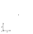
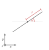
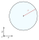
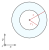
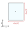
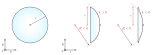
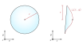
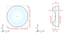
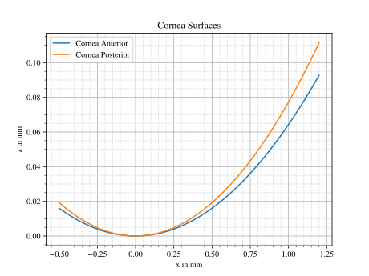

4.3. Base Shapes (Surface, Point, Line)#
4.3.1. Overview#
Surfaces, points and lines are the base component for all Element classes. They describe a geometrical behavior relative to their center (marked as “x” in the following figures). Surfaces, points and lines have no absolute position in three-dimensional space, their actual position is assigned and managed by their owner element. As well as for other geometries, all lengths are given in millimeters and angles in degrees.
4.3.2. Point and Line#
Points and Lines are the simplest kinds of geometries. While they are not very useful for lenses, detectors and so on, they are often used for the RaySource geometry. Both types have no extent in z-direction, are therefore parallel to the xy-plane.
 Fig. 4.5 Point geometry# |
 Fig. 4.6 Line geometry# |
{kind=link}
{kind=link}
To create a point simply write:
P = ot.Point()
A line with radius 2 and an angle of 40 degrees to the x-axis can be defined using:
L = ot.Line(r=2, angle=40)
4.3.3. Planar Surfaces#
These two dimensional surfaces have no extent in z-direction, therefore being parallel to the xy-plane. Circular surfaces are often used for plan-concave or plan-convex lenses or color filters. Ring surfaces typically can be found for Apertures, and rectangular surfaces for detectors or image RaySources.
 Fig. 4.7 Circle geometry# |
 Fig. 4.8 Ring geometry# |
 Fig. 4.9 Rectangle geometry# |
{kind=link}
{kind=link}
{kind=link}
A circle/disc of radius 3.5 can be created with:
Disc = ot.CircularSurface(r=3.5)
When constructing a ring surface and additional inner radius \(r_\text{i}\) is required:
Ring = ot.RingSurface(ri=0.2, r=3.5)
The rectangular surface has a list of two elements as parameter, that describe the extent in x and y direction. For a side length in x-direction of 4 mm and 5 mm in y-direction we write:
Rect = ot.RectangularSurface(dim=[4.0, 5.0])
4.3.4. Height Surfaces#
Tilted Surface

Fig. 4.10 TiltedSurface geometry#
A TiltedSurface has a circular projection in the xy-plane, but has a surface normal that is generally not parallel to the optical axis. It can be used for creating prisms or tilted glass plates.
As for most other surfaces it is defined by a radius \(r\). Additionally a normal vector must be provided. This can either be done in the cartesian form, with 3 elements and parameter normal=[x, y, z] or using spherical coordinates normal_sph=[theta, phi] with two elements. theta describes the angle between the normal and the optical axis (z-axis), while phi describes the angle in the xy-plane.
The following examples both describe the same surface. Depending on the case, one of the methods for specifying the normal might be preffered.
TS = ot.TiltedSurface(r=4, normal=[0.0, 1/np.sqrt(2), 1/np.sqrt(2)])
TS = ot.TiltedSurface(r=4, normal_sph=[45.0, 90.0])
Spherical Surface
A spherical surface is the most common surface type for lenses. It is defined by a curvature radius \(R\), which is positive when the center of the circle lies behind the surface and negative otherwise. This is illustrated in figure Fig. 4.11.

Fig. 4.11 Spherical surface geometry with a positive and negative curvature radius \(R\)#
Constructing such a surface is done with:
sph = ot.SphericalSurface(r=2.5, R=-12.458)
Conic Surface
{kind=link}

Fig. 4.12 Conic surface geometry with a different conic constant \(k\) signs. An aspheric surface has a small additional rotationally symmetric polynomial added.#
A conical surface takes another parameter, the conical constant k:
conic = ot.ConicSurface(r=2.5, R=23.8, k=-1)
A visualization of different conical constants can be found in [1]. The mathematical formulation of such a surface is later described in the in-depth documentation in Section 6.3.3.1.
Aspheric Surface
An aspheric surface has additional polynomial components \(a_0 r^2 + a_1 r^4 + \dots\), where \(a_0,~a_1,\dots\) are the polynomical coefficients given in powers of millimeters. The fully mathematical formulation for an aspheric surface is found in Section 6.3.3.3.
For \(a_0 = 0, ~ a_1 = 10^{-5}, ~a_2 = 3.2 \cdot 10^{-7}\) the surface is created like this:
asph = ot.AsphericSurface(r=2.5, R=12.37, k=2.03, coeff=[0, 1e-5, 3.2e-7])
Generally there is no limit on the number of coefficients, however after a dozen one should ask oneself if they are worth the additional computational effort.
4.3.5. User Functions#
Overview
The FunctionSurface2D class allows us to define custom surfaces, defined by a mathematical function depending on x and y, generally with no symmetry. However, for functions with symmetry we can also use the FunctionSurface1D class, where the values are only dependent on the radial distance r.
{kind=link}

Fig. 4.13 Custom function according to \(z_\text{s}(x,~y)\), which can be a symmetric or asymmetric function or a dataset#
Simplest case
As an example we want to create an axicon surface. In the simplest case the height values are just the radial distance from the center:
func = ot.FunctionSurface1D(r=3, func=lambda r: r)
We can use a FunctionSurface2D with rotational symmetry, which is called FunctionSurface1D.
The user defined function must take r-values (as numpy array), return a numpy array and is provided as the func parameter.
While we could add an offset to the axicon function, this is not needed, as a constant offset is removed/adapted when the surface is initialized.
Providing partial derivatives
To speed up tracing and enhance numerical precision we can provide the partial derivatives of the surface in x and y-direction.
For our axicon the special case \(r=0\) needs to be handled separately.
The derivative function is passed with the deriv_func-parameter.
def axicon_deriv(r):
dr = np.ones_like(r)
dr[r == 0] = 0
return dr
func = ot.FunctionSurface1D(r=3, func=lambda r: r, deriv_func=axicon_deriv)
Function parameters
In many cases one uses a already defined function with additional parameters, or in a different case we don’t want to hard-code the values into any function.
The user can provide a dictionary of parameters that will get passed down to the corresponding function.
For the func argument the matching parameter would be func_args.
def axicon(r, a):
return a*r
def axicon_deriv(r, a):
dr = np.full_like(r, a)
dr[r == 0] = 0
return dr
func = ot.FunctionSurface1D(r=3, func=axicon, func_args=dict(a=-0.3), deriv_func=axicon_deriv, deriv_args=dict(a=-0.3))
z-Range
When initializing a surface optrace tries to determine the surface extent in z-direction. The z_min and z_max values are needed to know the surface bounds, which in turn are needed for tracing of the surface.
While this works automatically in many cases, the user has the option to provide these values manually.
If these values should largely differ from the automatically estimated values a warning or for large deviation an exception is issued.
For a a=-0.3 and r=3 the z-bounds are [-0.9, 0]. This can be provided using:
func = ot.FunctionSurface1D(..., z_min=-0.9, z_max=0)
Radius of Curvature
We can also provide a radius of curvature for the paraxial region. This will be used for ray transfer matrix analysis in section <>. Note that this only makes sense, if the surface has rotational symmetry near the center and is curved in this region.
func = ot.FunctionSurface1D(..., parax_roc=3.465)
Note that for our axicon example there can be no paraxial radius of curvature defined.
Mask function
When defining custom apertures or filters, the mask_func-parameter comes in handy.
As well as for the other function parameters an optional mask_args can be provided.
To define a half circular aperture with radius \(r=0.1\), one can write:
def mask(x, y, r):
return (x > 0) | (x**2 + y**2 > r**2)
func = ot.FunctionSurface2D(r=3, func=lambda x, y: np.zeros_like(x), mask_func=mask, mask_args=dict(r=0.1))
In this case the func-parameter is just a plane. Note that we need to use the FunctionSurface2D class, as there is not rotational symmetry anymore.
4.3.6. Data Surfaces#
DataSurface2D
A DataSurface2D is defined by a height dataset in a square matrix.
This square set gets cut into a disc after initialization.
Together with this set the radius of the disc is needed, which is the r parameter.
It is recommended to have 200x200 or larger matrices. Values between data cells are interpolated with a polynomial of forth order, so that curvature changes at the surface are smooth.
Here is and example of a lens with direction dependent curvature and a little noise/manufacturing errors added:
r0 = 3
X, Y = np.mgrid[-r0:r0:200j, -r0:r0:200j]
H = 0.1*X**2 + 0.2*Y**2
H += 0.005*np.random.sample(X.shape)
data2d = ot.DataSurface2D(r=r0, data=H)
Note that we can also add the parameters z_min=..., z_max=, parax_roc as for the FunctionSurface class.
DataSurface1D
For a surface with rotational symmetry one radial vector is sufficient:
r0 = 3
r = np.linspace(0, r0, 1000)
h = r**2
h[r > 1] = 1
h += 0.005*np.random.sample(1000)
data1d = ot.DataSurface1D(r=r0, data=h)
4.3.7. Additional Geometrical Quantities#
Bewlo you can see some additional geometrical quantities that are useful when moving surfaces, assigning them to lenses or determining the correct thicknesses.
{kind=link}

\(z_\text{min}\) and \(z_\text{max}\) describe the minimal and maximal z-position on the surface, while \(z_0\) is the z-position of the center. \(d_\text{s}\) is the difference between \(z_\text{min}\) and \(z_\text{max}\), \(d_\text{p}\) is the difference between \(z_\text{max}\) and \(z_0\) and \(d_\text{n}\) the difference between \(z_0\) and \(z_\text{min}\).
There is a smallest three-dimensional box encompassing all of the surface. It can be described by four values, the extent. It consists of two values per dimension, where each describes one of the bounds in this dimension.
4.3.8. Plotting#
Visualizing surfaces is done with the function surface_profile_plot from optrace.plots.
The surface profiles are plotted with absolute coordinates, if you want to display them relative to each other provide remove_offset=True.
surface_profile_plot takes a Surface or a list of Surfaces as argument as well as some other display options.
In the following examples both cornea surfaces of the arizona eye model are plotted:
import optrace.plots as otp
G = ot.presets.geometry.arizona_eye()
L0 = G.lenses[0]
otp.surface_profile_plot([L0.front, L0.back], remove_offset=True)
Optionally a title parameter can be provided. You can plot only part of the profiles by providing values for x0 and xe.
otp.surface_profile_plot([L0.front, L0.back], block=False, remove_offset=True, x0=-0.5, xe=1.2, title="Cornea Surfaces")
This produces the following plot:
{kind=link}

Fig. 4.14 Surface profile plot for the two cornea surfaces of the arizona eye model.#
References